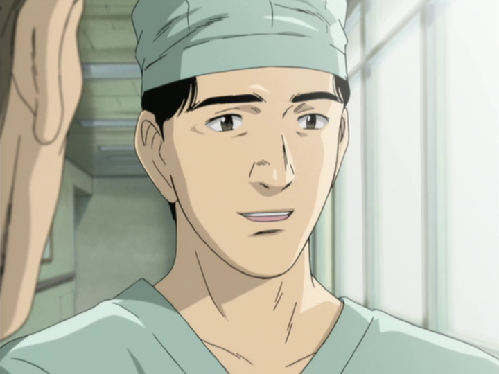
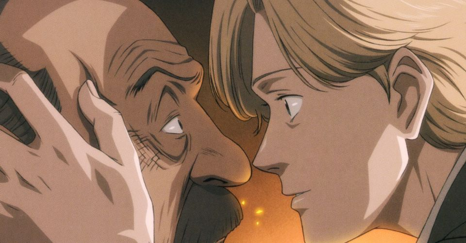
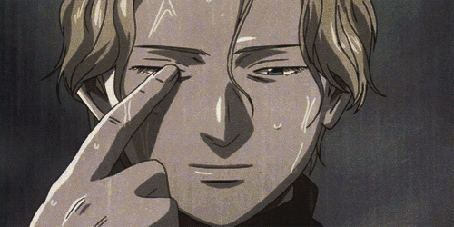

An Introduction to the Madness
Monster is a psychological thriller anime which will challenge the way that you think and how you perceive certain matters. The various situations that characters are thrust into cause you to question whether each character is making the right choice, and thus questioning yourself and your morals. This anime entails a Japanese neurosurgeon named Kenzo Tenma who resides in Dusseldorf, Germany. Dr. Tenma is a great surgeon and is well respected by his peers, as well by his patients whom he tends to. Tenma is a kind man who strongly believes in his pure morals, which are that “all lives are created equal”.
One day, Dr. Tenma is faced with a moral dilemma; he must choose between operating on a young 10-year-old boy who has a gunshot wound in his skull, or the mayor of the city wwho provides funding to the hospital. Making a judgement call, Tenma opts to operate on the child and saves him; however, the surgeons who were operating on the mayor fail in their procedure, and so the mayor ends up passing away. As we see, Tenma doesn’t doubt this decision one bit; he believes that he made the right decision, and that giving the young boy a chance to live a long life was the correct choice to make.
However, it’s eventually revealed that the young boy named Johan Liebert is a cold, calculated serial killer who slaughters all who oppose him. Johan eventually involves Tenma in his affairs, as Johan feels as though Tenma and him are intertwined due to the fact that Tenma saved Johan on that fated night when Johan murdered his fosters parents. This creates a relationship that persists throughout the show between the kind-hearted, pure Kenzo Tenma and the psychotic, murderous Johan Liebert, and their dynamic is part of what makes the show so appealing.
Emotional Impact
As great of an anime this is, it's notoriously very slowly paced due to the fact that it takes long periods of time in order to build up characters and their relationships between each other, which just makes the grueling situations that they are put in all the more heartbreaking. Characters such as Richard Braun and Martin Reest are seemingly side characters, and yet they are given the spotlight in multiple episodes for a multitude of reasons.
First of all, these characters are all developed in an amazing manner, which just makes everything feel that more tragic once they are killed off. The emotional connection created between these characters and the viewer is great, especially considering Martin and Richard were only in about 4 episodes each and subsequently killed off. Martin's death was especially heartbreaking in my opinion, as he was an empty, sorrowful, lonely person, and Eva served as a reprieve for him. However, in the end, Martin didn't get to experience a life with Eva as he is quickly killed.
Second of all, these characters provide us with a new, fresh perspective to gaze at the story from. Richard is just another person who get too close to Johan in his investigation. Richard’s death is a tragedy and serves as fuel for revenge for certain characters in the story, but it mainly served as a reminder of what Johan is capable of and what he will do to anyone who attempts to figure out his identity. Martin is another intriguing character due to the fact that he undergoes great development within a few episodes due to the presence of Eva Heinemann. Martin goes from a person who is very emotionally detached to deeply caring for Eva within a short timeframe, and he eventually asks Eva to run away with him to another city. However, we never get to see Martin’s request fulfilled due to the fact that he’s killed while attempting to protect Eva from a group of hitmen. These characters are not main characters in any regard; however, they leave their impact on the show and the viewer in many ways, which is a telling trait of a well written character.
A Nameless Monster...
Erich Springer. Michael Reichmann. Franz Heinau. These are all aliases used by one man; however, there’s no mistaking his true identity: Johan Liebert. Johan can be described in no way other than the embodiment of the Devil itself. Johan constantly uses whatever methods necessary in order to carry out his sickening murders, which he very clearly derives pleasure from. Johan's ability to manipulate others to persuade them to carry out his bidding is nauseating; throughout the story, Johan employs various serial killers in order to murder others for him in order to keep his identity a secret from the public. In each case, Johan somehow is able to analyze each of these killers in order to figure out their psyche and their thought process. Once Johan has figured this out and made it clear that he’s aware of these weaknesses, he is quite easily able to manipulate these serial killers into doing whatever he pleases. This manipulative ability is shown in his experiments at 511 Kinderheim, Red Rose Mansion, and finally at Ruhenheim at the ending of the show. Johan is seemingly able to murder all the residents at these locations without lifting a single finger. It’s horrifying to imagine that he’s able to sow such fear and evil among people just through his words.
However, knowing all of the horrid deeds Johan has committed and the way in which he operates, he must have some sort of greater scheme, right? Well, he does have a goal, and it’s beyond what any viewer could have imagined: erasure. Johan takes inspiration from the “The Nameless Monster”, his favourite picture book as a child. The story goes as follows:
Once upon a time, in a land far away, there lived a nameless monster. The monster was dying to have a name, so the monster set out on a journey to find one. But the world was a very large place. The monster split into two and went on their way. One monster went East. One went to the West. The monster who went to the East found a village. At the village's entrance there lived a blacksmith. "Mr.Blacksmith, give me your name" said the monster. "I can't give you my name" the blacksmith replied. "In return for giving me your name, I'll go inside of you and make you strong." "Really? If you make me strong, I'll give you my name." The monster went inside the blacksmith. Thus, the monster became, Otto the blacksmith. Otto the blacksmith was the strongest man in the village. But then one day... "Look at me, look at me. The monster inside me is getting so big." He said. Munch-munch, chomp-chomp, gobble-gobble, gulp. The hungry monster ate Otto from the inside out. Once again, he was a monster without a name.
When he went inside Hans the shoemaker, however... Munch-munch, chomp-chomp, gobble-gobble, gulp. When he went inside Thomas the hunter, but... Munch-munch, chomp-chomp, gobble-gobble, gulp.The monster was nameless once again. The monster went to a castle to find a nice name. Inside the castle lived a sick boy. "If you give me your name, I'll make you strong." "If you can heal my illness and make me strong. I'll give you my name." The monster went inside the boy. The boy became full of vigor. The king was overjoyed. "The prince is healthy. The prince is healthy." The monster liked the boy's name. He also liked living in the castle. So he restrained himself even though he was hungry. Day after day, he would be terribly hungry, but he restrained himself. But the hunger became just too great. "Look at me. Look at me. The monster inside me has gotten this big," said the boy. The boy devoured the king and and all his servants. Munch-munch, chomp-chomp, gobble-gobble, gulp.
Everyone was gone, so the boy went on a journey. He walked for days and days. One day, the boy came upon the monster who had gone west. "I have a name. It's a wonderful name." Said the boy. The monster who went west replied. "I don't need a name. I'm perfectly happy without one, after all, that's what we are--nameless monsters." The boy ate up the monster who went west. At last he had found a name, but there was no longer anyone around to call him by it. Such a shame, because Johan was such a wonderful name.
This story actually parallels Johan, as he wishes to follow the path of the nameless monster so that he may fully erase his identity from this world, therefore allowing him to take his own life. This might be due to the fact that Johan felt that he was no longer a nameless monster since Lunge and various other people had discovered his identity, thus no longer making Johan “nameless”. By murdering all these people, Johan would effectively wipe out his presence from this world, making him the “nameless monster”. We’d actually already seen Johan attempt to erase himself from the world 10 years prior on a much smaller scale when he wiped out his foster parents, as they were the only 2 people in the world at the time who were aware of Johan’s identity. Johan’s goals are tough to understand, but that’s just because Johan is such a deeply layered, psychotic character, and so this makes his motives very difficult to follow. Despite all this, Johan is potentially the greatest villain I have seen in any media ever. The presence which he demands, the feats that he goes to in order to accomplish his goals, his ability to manipulate others, and the way in which his speeches sends chills down the spine of the viewer is truly fascinating. He truly is a monster.
Nature vs Nurture
While we’re on the topic of Johan, there’s a classic question of philosophy that we must indulge in, which is nature versus nurture. Was Johan truly born as the devil incarnate and destined to be evil, or did Johan’s surroundings and his environment influence the monster that he became? Well, there’s a valid argument to both sides of this debate. Since Johan’s twin sister Nina endured hellish conditions at the Red Rose Mansion and didn’t become a cold-blooded psychopath, we theoretically could state that Johan was born evil and is not a product of his environment. However, we must keep in mind that Johan did go through deeply traumatizing matters in his childhood. Johan’s sister is dragged away from him at a very young age, causing his memories to falter which makes him believe that it was himself who was dragged away instead of his sister. This is seemingly the root cause of his descent into the life of a monster and could be used as a case to represent the nurture side of the argument.
In my personal opinion, I do believe that Johan was a product of his environment. He had to go through events which a child should never have to endure; not only did Johan mistake his sister’s memories of the Red Rose Mansion for his own, but he also had to endure being separated from his sister for a 2nd time and living at the 511 Kinderheim orphanage. This is not to excuse Johan’s crimes at all, as these events give him no excuse to murder countless people; however, they give us an insight into why Johan is the way that he is. These events shaped Johan into the monster that he became, which begs another question: is society responsible for creating such a demon? Well, Johan had to suffer as a child at the hands of the German organization which desired to experiment on children such as Johan in order to “create the perfect soldier” and “a leader to surpass Hitler himself”. So, in a way, by Johan being directly exposed to sickening treatment from a bloodthirsty side of society, he became the nameless monster. Society must partake in the blame for creating such a bloodthirsty reincarnation of the devil.
“Doctor Tenma, for you all lives are created equal, that’s why I came back to life. But you’ve finally come to realize it now, haven’t you? Only one thing is equal for all, and that is death.” – Johan LiebertConflicting Ideologies
A large portion of what makes the dynamic between Kenzo Tenma and Johan Liebert so engrossing is the contrast that their roles and ideologies create. For one, Tenma is a person who quite literally saves lives while Johan is the one who takes lives away. Apart from that, we have Tenma believing in existentialism and Johan believing in nihilism, which are two completely conflicting methods of thinking. Although this is not ever explicitly stated, we can infer this from their words as Tenma often says “every life is born equal” while Johan frequently states “no life is significant at all”. In any case, existentialism is the philosophical theory that concerns itself with the phenomenon of existence of an individual person, while nihilism is the belief that life and everything that comes with it has no meaning. As we can see, these two ideologies are complete polar opposites of each other, and it’s engaging to view how these ideologies are used in contrast to create tension between the characters.
Existential Questions
At the core, I feel as though the series leaves one question to the viewer: what’s truly right or wrong? How far do we go in order to uphold our values of not taking another person’s life? Is it truly acceptable to take someone’s life, if there’s a high chance that that person will take other lives in the future? Are we wrong to put down mass murderers such as Johan, who have caused such pain and suffering to all of mankind? These are the kinds of questions that the series leaves as food for thought for the viewers, and it’s a huge reason of why I enjoyed the show so much. Never before has a show evoked such deep thinking and questions within myself.
Execution of the Ending
The ending of Monster is seemingly built up to be very climatic; Grimmer has just died from a gunshot wound, Lunge is wrestling with Roberto inside a hotel, and Tenma finally has his meeting with the one he’s been searching for all along: the monster, Johan. Tenma points the gun at Johan, while Johan makes his signature motion of tapping his forehead, hereby signaling Tenma to shoot him to end this madness. Despite the pain and suffering Johan has caused others, Tenma shows his true colours by still being reluctant to pull the trigger. Tenma’s resolve is one of the major factors of this series, as he truly sticks to his morals to the bitter end by being unable to take someone’s life. In response to this, Johan takes the child Vim as a hostage, seemingly forcing Tenma to supposedly shoot Johan. However, Vim’s drunkard father appears on the scene and shoots Johan in the head; thus, the tale of Johan is ended.
In a way, this ending is seriously anticlimactic. We’re continuously built up to the fact that Tenma will eventually abandon his morals, forcing him to become a monster in order to defeat a monster; instead, matters sort of seem to just resolve themselves as Vim’s father is instead the one to shoot Johan, which results in a sort of deus ex machina moment. I do believe that Tenma becoming a monster might’ve been a more memorable ending due to the fact that the anime would be portraying the impact of Johan on Tenma, and the way in which Tenma had to abandon his morals in order to make the hard decision of saving Vim. If this ending were to take place, it would’ve been the rare case in a media where the villain is the one to be victorious in the end; Johan would’ve accomplished his goal of wiping himself from the Earth, while also forcing Tenma to break his vows of the Hippocratic Oath in order to save Vim’s life. Instead, we’re left with a bit of a bathetic feeling and a longing for an alternate ending.
However, the credit that I will provide to the ending is the way in which it displays circular storytelling. The anime begun with Dr. Tenma operating to remove a bullet from Johan’s head before his imminent escape from the hospital, and the anime ends with Dr. Tenma operating to remove a bullet from Johan’s head before he does… what exactly? Nobody really knows what happens to Johan after that, as it’s left as an open ending to the audience. So, did Johan continue to commit mass murders in pursuit of his dream to fully realize his nihilistic identity, or did he perhaps start a new life in attempt to redeem himself? Well, I believe the answer depends on who you are. If you are one with Kenzo Tenma’s way of thinking, you’d most likely attempt to forgive him and convince yourself that Johan went on to live a good life. Otherwise, you definitely remain suspicious of Johan and believe that he is still an at-large psychopathic murderer. It’s also entirely possible that neither happened and Johan remained in a coma; however, I guess we’ll never find out.
Final Thoughts
In conclusion, Monster is one of the deepest, most thought-provoking series I’ve seen within my lifetime. I adored the characters, the way in which they were developed, and the various plot lines within the story. I will admit that I was a bit taken aback by the ending; however, I feel as though it doesn’t take away from the experience that Naoki Urasawa has so deliberately crafted. Monster is truly a masterpiece of a show, and anyone who has a love for psychological thriller shows which challenge your thought process will adore the experience that it provides. “There’s nothing special about being born. Not a thing. Most of the universe is just death, nothing more. In this universe of ours, the birth of a new life on some corner of our planet is nothing but a tiny, insignificant flash. Death is a normal thing. So why live?” – Johan Liebert